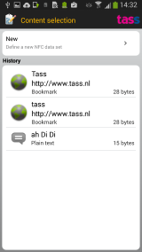
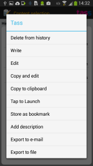

Permissions description
Share

Here you can either define new content to write by clicking the 'New' button, or you can reuse
content you have previously written or backed up. When clicking on an item in the history list, it
will be selected to be written again.
Further, you can long-click on an item to get a menu with some options to modify or act on the item:

- Delete from history: Delete the item from the history.
- Edit: Edit this item, and come back to this menu afterwards.
- Copy and edit: Create a copy of this item and edit that, then come back to this menu afterwards.
- Launch: Depending on the item type, the 'launch' action will act on the item. For example,
an SMS will be opened in the SMS editor, a phonecall with the dialler etc. When the user has specified
that an item can be directly launched in the preferences, the SMS will be sent straight away, the phone call
will be made straight away, etc.
- Store as bookmark: Only visible for URLs: the content can be stored as a bookmark.
- Store in contacts: Only visible for Contacts: the content can be stored as an entry in your Contact list.
Not all options are available for all content types.